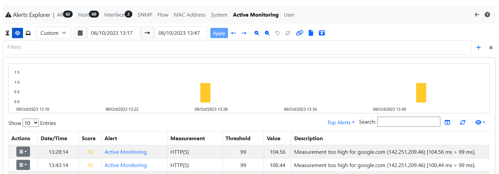

Активный мониторинг
ntopng поддерживает активный мониторинг хостов и устройств. Активный мониторинг означает, что ntopng активно и периодически достигает хостов и устройств, чтобы проверить их статус или статус их служб. В этом разделе описаны функции активного мониторинга, предлагаемые ntopng.
Активный мониторинг доступен в разделе Системный интерфейс. Зонды активного мониторинга настраивали хосты ежеминутно для проверки:
IP-доступность.
Функциональность некоторых сервисов.
Некоторые проверки измеряют RTT, то есть время, необходимое для достижения определенного хоста и получения от него ответа. Другие проверки измеряют пропускную способность. В настоящее время поддерживаются следующие проверки:
ICMP и ICMPv6: для проверки доступности IP-адреса хоста.
HTTP и HTTPS: для проверки функциональности возможных хост-веб-серверов.
Пропускная способность: проверка пропускной способности Интернета.
Speedtest: проверка пропускной способности Интернета.
Все отслеживаемые хосты показаны в таблице.

Таблица активных мониторов
В таблице имеются следующие столбцы:
URL: Полный URL-адрес отслеживаемого хоста. URL-адрес представляет собой объединение имени хоста или IP-адреса с префиксом, который указывает тип зонда, а именно один из:icmpicmpv6httphttpsspeedtest
Chart: Ссылка на диаграмму измерений, присутствует, когда Измерение временных рядов включены.Threshold: Порог, используемый для запуска Измерение оповещений.Last Measurement: Время последнего выполненного измерения.Last IP: последний IP-адрес, разрешенный для имени хоста, указанного в URL-адресе.Measurement: значение последней меры.Actions: Кнопки для удаления или редактирования настроенного хоста.
Хосты можно добавить к активному монитору с помощью plus подпишитесь в правом верхнем углу таблицы.

Панель добавления записи RTT
При добавлении хоста необходимо ввести четыре поля:
measurement: Тип проверки.host: имя хоста или IP-адрес хоста, который необходимо отслеживать.periodicity: Как часто выполнять проверку.rtt threshold: Порог, используемый для запуска Измерение оповещенийactive monitoring pool: активный пул мониторинга, связанный с этим хостом.default interface: Интерфейс, который будет использоваться при проверке этого хоста (доступно только для icmp)
Измерение оповещений
Оповещения срабатывают, когда измеренное значение превышает настроенное пороговое значение или когда хост недоступен. Настройка порога зависит от добавления узла в число отслеживаемых. Оповещения отображаются под треугольным элементом строки меню активного монитора.

Оповещения о мерах
Оповещения могут быть активными для текущих проблем или прошлыми для проблем, возникших в прошлом.
Измерение временных рядов
Таймсерии измерений по умолчанию записываются автоматически для любого из отслеживаемых хостов. Например, на изображении ниже показаны таймсерии RTT, написанные для хоста. http://ntop.org.

Таймсерии RTT отслеживаемого хоста
Таймсерии можно отключить из ntopngPreferences, вкладка Таймсерии->Системные зонды.

Конфигурация измерения временных рядов
В случае мониторинга HTTP временной ряд «HTTP Статистика» показывает дополнительную информацию о трафике HTTP:
Name Lookup: время, потраченное на разрешение имени хостаApp Connect: время, проведенное в рукопожатии SSLOther: оставшееся время для запроса и ответа HTTP